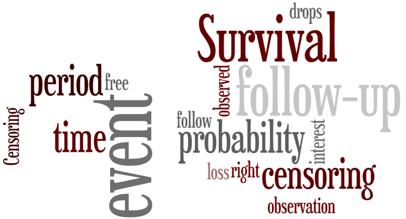

In this project, we developed a default probability model used to analyze the creditworthiness of loan applicants using Python. We used the Gini coefficient and the Kolmogorov-Smirnov coefficient to evaluate the performance of the default model.

A walkthrough of statistical credit risk modeling, probability of default prediction, and credit scorecard development.
In this project we analyzed the characteristics of European soccer and players, explored data visualization of average points scored per league, the home team wins vs.
away team wins and draws ratios and a comparison of team attributes between effective and remaining teams.

In this project we identified whether there were improved performances in the classification of consumers’ default when different machine learning algorithms were implemented.

In this project, we developed a deep learning algorithm using R programming and Python on four real-world hospital survival (time-to-event) datasets and compared the model's performance on all datasets with traditional survival methods (Cox-Ph, AFT, RSF, and FGR), using the Brier scale integrated with the C-index. Results from four datasets showed improved prediction accuracy with deep learning algorithms compared to traditional survival techniques.
This project effectively explans the terminology associated with the field of Data Science/Analysis for the data community